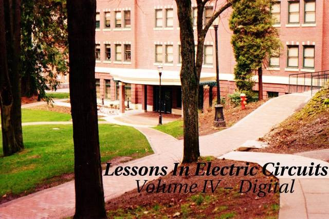
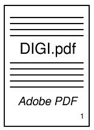
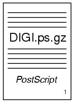
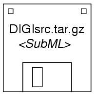
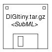

Copyright (C) 2000-2014, Tony R. Kuphaldt
See the Design Science License (Appendix 3) for details regarding
copying and distribution
Revised January 18, 2006
Download printable versions of this volume
Adobe PDF format:

Approximately 2.75 megabytes
Adobe PostScript (compressed) format:

Approximately 12 megabytes
"How do I view and/or print PostScript documents," you ask?
Easy! Just download some free software at: www.cs.wisc.edu/~ghost.
There you'll find GSview and Ghostscript, two progams
necessary to display and print Postscript files (they'll even display
and print compressed PostScript files!). These programs also
display and format Adobe PDF files as a bonus. Versions for Windows,
OS/2, and Linux available.
Download source files for this volume

Approximately 17 megabytes

Approximately 1.5 megabytes
To "compile" these source files into a viewable format, you will
need the following pieces of software (all available freely over the
internet):
- Make, a project management utility originally intended as
a programming tool, but useful for managing just about any kind of
computer project composed of many files. If you cannot obtain a
copy of Make for your computer system, you can get by with a little
skill and a few batch files (also known as shell scripts). The master
"Makefile" in this directory is readable with a text editor or word
processor, and contains all the instructions carried out by the other
utilities.
- Sed (stands for Stream EDitor), a common UNIX utility for
performing search-and-replace commands on text files. Required to
convert SubML source code into HTML, TeX, LaTeX, and other formats. This
is all you need for generating HTML output!
- LaTeX2e, a document formatting system designed as an
extension to TeX, Donald Knuth's outstanding text processing system.
You can also get by with just plain TeX, but your printed output won't
look quite as nice and it will lack table-of-contents and index entries.
If you opt for the smaller of the two files (DIGItiny.tar.gz), you'll
also need a set of graphic manipulation utilities released as a package
called ImageMagick. Specifically, the utility you'll need is
named Mogrify. The larger of the two source archive files
contains all graphic images in two formats, Encapsulated PostScript
(*.eps) and JPEG (*.jpg). This makes for a large file. The smaller
source archive file only contains Encapsulated PostScript for schematic
diagrams and JPEG images for photographs. This makes for a much smaller
file, but it requires that you do some image conversion on your end. If
you have access to other image manipulation software capable of
converting hundreds of files with a batch command, you won't have to
use ImageMagick.
Back to Master Index